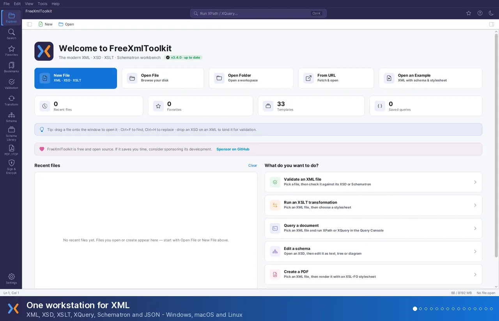

FreeXmlToolkit – your complete XML workstation¶
Edit, validate, transform, debug and document XML, XSD, XSLT, XQuery, Schematron, JSON and YAML in one desktop application – with a graphical XSD editor, an XSLT / XQuery / Schematron debugger, PDF output, signatures, a command line and plugins for financial and regulatory formats. Everything it can do · How it compares · What's new
Free, open-source desktop app for XML, XSD, XSLT, Schematron and JSON – Windows, macOS and Linux. No registration, no admin rights needed.
Windows x64 · Windows 10/11
Download .exe installer- MSI package – for silent / Group Policy deployment
- Portable ZIP – no installation, extract and run
- Scoop –
scoop install karlkauc/freexmltoolkit
macOS Apple Silicon & Intel
Download .dmg (Apple Silicon)- Intel .dmg – for Intel-based Macs
- .pkg installer (Apple Silicon) · .pkg (Intel)
- Portable ZIP (Apple Silicon) · Portable ZIP (Intel)
- Homebrew –
brew install --cask karlkauc/tap/freexmltoolkit
Linux x64
Download .deb package- .rpm package – Fedora, RHEL, openSUSE
- .deb is for Ubuntu, Debian and Linux Mint
- Portable ZIP – any distribution, extract and run
At a glance¶

Where to start¶
-
Open the bundled example, validate it, transform it and query it. About 15 minutes.
-
Guides by task: edit XML and JSON, design schemas, validate, compare, sign.
-
The graphical XSD editor, schema analysis, documentation, sample XML and the Schema Library.
-
XSLT, XQuery, XPath and XProc, with a debugger, a profiler and XSpec tests.
-
Check a regulatory or industry file
FundsXML, ISO 20022, FinDatEx, XBRL, ebInterface and FMA / ESMA reporting.
-
The
fxt-clicommand line for build pipelines and the MCP server for AI agents. -
Silent installation, policies, offline operation, privacy and the threat model.
-
Write your own plugin: activities, validators, menu items and element descriptions.
New to the window? Take the Tour of the workspace. Looking for a key or a setting? See the Reference. The release notes are under What's new, and What FreeXmlToolkit can do lists every area of the application.
Support the Project¶
FreeXmlToolkit is free and open source. If it saves you time, please consider sponsoring its development — sponsorships directly fund maintenance, bug fixes and new features.
Inside the application the sponsor link is available in the Help menu (Sponsor this Project), in the About dialog, on the Welcome page and under Settings → Extensions → SUPPORT THE PROJECT. Starring the repository and reporting bugs helps too.